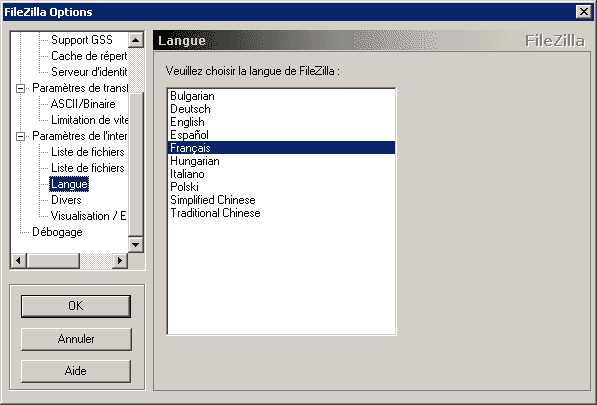

Langue de l'Interface
Vue d'ensemble:
FileZilla supporte habituellement deux langues: l'Anglais et l'Allemand. Il utilise l'anglais par défaut. Pour un affichage en allemand, vous devez télécharger le fichier DLL de langue allemande sur la Page Web de FileZilla. Bienvenu à chacun d'entre vous qui voudrait traduire l'interface de FileZilla et/ou cette documentation dans la langue de son choix! :-)
Dans la section Langue de la boîte de dialogue des Options de FileZilla, vous pouvez sélectionner la langue souhaitée pour l'affichage de FileZilla.

Cliquez simplement sur votre langage, et cliquez ensuite sur OK pour enregistrer et fermer la boîte de dialogue.